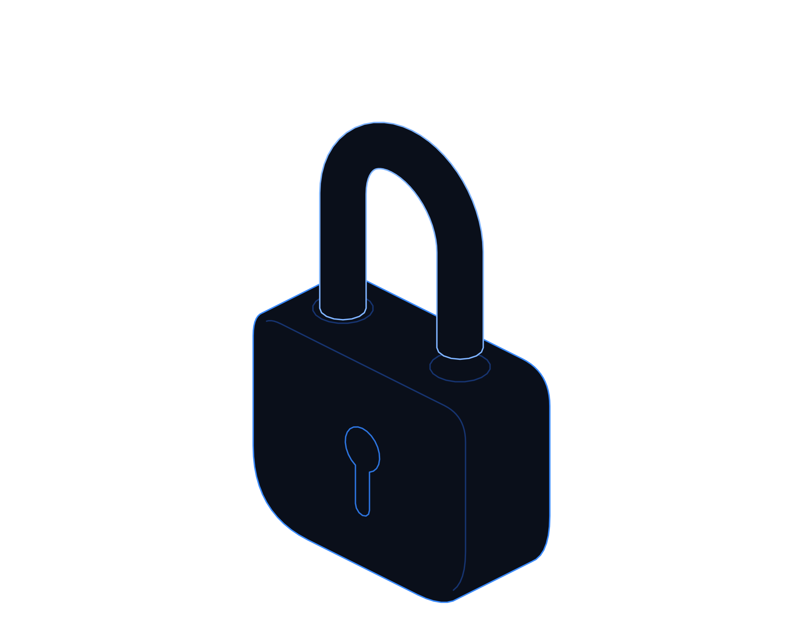
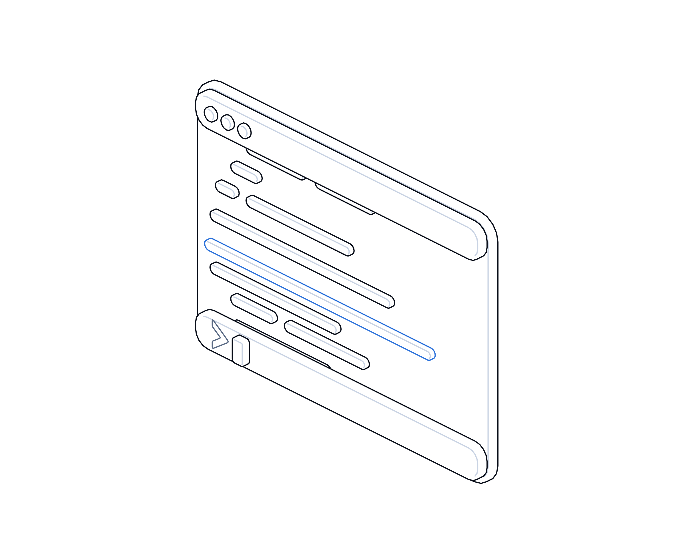

Ransomware Gets an Upgrade


Hot topics · Playbook
No. 09 · November 2026
Hot topics · Ransomware and AI
Ransomware gets
an upgrade.
The NCSC says AI is highly likely to feature in a ransomware attack on UK critical infrastructure by 2028. A UK school estate may already have seen an early version. Here is what to do now.
Transputec playbooktransputec.com
Inside
Contents
A practical guide for UK organisations as ransomware becomes faster and more automated: what the NCSC and Bitdefender reported this week, the basics that still stop most attacks, and how to be ready for the bad day.
Foreword03
Introduction04
01What happened06
02Shut the easy doors10
03Ready for the bad day16
Sources24
 Contents
ContentsRansomware Gets an Upgrade · Hot Topics · Playbook02 / 25
Foreword
The tools are changing. The ways in are not.
On 3 November 2026 the NCSC published its Annual Review, subtitled The State of the Cyber Nation. One judgement stood out: it is highly likely that, between now and 2028, AI-powered malware will have been used in a ransomware attack on UK critical national infrastructure.1
The same day, Bitdefender described a ransomware attack on a UK school estate in which the commands looked as if they had been written by a language model, possibly running in a loop that fed results back to it. Bitdefender is careful to call that a working model rather than a proven fact.2
It would be easy to read both as a story about clever machines. The more useful reading is plainer. The NCSC says most successful attacks still start with familiar weaknesses, and that AI mainly makes existing methods faster and cheaper. That means the basics matter more, not less, and that the time you have to spot an intruder is shrinking.
This playbook is for UK business and IT leaders. It covers the controls that still stop most ransomware, how to detect and respond at speed, how to prepare your plan, your people and your ransom decision, and a plan for this week, this month and this quarter.
The Transputec team
Transputec
Foreword Ransomware Gets an Upgrade · Hot Topics · Playbook03 / 25
Introduction
Three things decide how a ransomware attack ends.
Attackers are getting quicker at the middle of an attack: exploring the network, stealing credentials and preparing to encrypt. The organisations that come through well have done three things in advance.
Shut the easy doors
Phishing-resistant MFA, fast patching of internet-facing systems, least privilege and segmentation stop most attacks before they start.
Spot the quiet days
Intruders often spend days preparing. Alerts on new admin accounts, credential theft and backup tampering give you time to act.
Be able to recover
Backups the attacker cannot reach, a tested restore, a rehearsed plan and a ransom decision process agreed before you need it.
Introduction Ransomware Gets an Upgrade · Hot Topics · Playbook04 / 25
Ten days inside.
Twenty-six minutes to encrypt.
In the school-estate attack, the intruder spent from 10 to 19 September preparing. The encryptor itself ran from 05:07 to 05:33. Detection that only notices the last step is too late.
Introduction Ransomware Gets an Upgrade · Hot Topics · Playbook05 / 25
01
Part 01
What
happened.
A national warning and a real attack, published on the same day.
01The NCSC's judgement
02The school-estate attack, day by day
03What is proven and what is not
Part 01 Ransomware Gets an Upgrade · Hot Topics · Playbook06 / 25
What happened
A warning and an example on the same day
Attacks are getting cheaper and quicker to adapt, while still relying on familiar gaps.
The NCSC's Annual Review 2026 covers September 2025 to August 2026.1 Among its key judgements, it says it is highly likely that AI-powered malware will have been used in a ransomware attack on UK critical national infrastructure by 2028. Highly likely is a formal term on the scale UK intelligence uses for probability, one step below almost certain.
The review is measured about what AI changes. It judges that AI will mainly increase the speed, scale and efficiency of existing attack methods rather than run attacks end to end, and that human operators remain essential. Its incident team handled 337 incidents in the year, 80 of them nationally significant, and most successful compromises still used known vulnerabilities, stolen credentials or social engineering.1
Also on 3 November, Bitdefender published its analysis of an attack by a 3AM ransomware affiliate on a UK school estate.2 Between 10 and 19 September 2026 the intruder stole backup credentials, created new domain admin accounts, linked separate domains with new trusts, took finance files and then encrypted about 37 machines.
What drew attention was the pattern. Commands contained slips typical of language model output, such as Linux-style syntax inside Windows PowerShell and API calls that did not match the vendor's documentation. Retries came 40 to 101 seconds apart regardless of how much had changed, which looks like a loop feeding command output back to a model.
Bitdefender is clear about the limits. It rates model-written commands as strongly supported, but says a person copying between a shell and a chat window cannot be excluded, and that an attack with no human involvement is unsupported. Initial access is unknown and the tools were conventional. As a security vendor, it also has a commercial interest. We treat the AI element as suspected, not proven.
Taken together, the message is not that ransomware has become unstoppable. It is that attacks are getting cheaper and quicker to adapt, while still relying on familiar gaps. The NCSC's chief executive urged organisations to invest with urgency.3 For most, that means applying the basics with less slack and spotting intruders during the days of preparation.
What happened Ransomware Gets an Upgrade · Hot Topics · Playbook07 / 25
The attack, day by day
Ten days in a UK school estate
Dates and times are as reported by Bitdefender, in UTC. Initial access was not observed.2
Date (2026)
What the attacker did
What it teaches
10 to 11 Sep
Ran a modified public script to pull saved credentials from three backup servers.
Backup servers are an early target. Isolate them and their accounts.
12 Sep
Tried to add an antivirus exclusion, downloaded Mimikatz, checked Domain Admins.
Alert on exclusion changes and known credential tools.
13 Sep
Dropped portable Python, listed service accounts and domain trusts.
Block interpreters on machines that never need them.
14 to 15 Sep
Created two accounts in Domain Admins, zipped and uploaded finance files.
Alert on any new privileged account within minutes.
18 Sep
Built two-way trusts between three separate domains.
Put trusts under change control and alert on changes.
19 Sep
Endpoint protection removal blocked. Encryptor ran 05:07 to 05:33.
Tamper protection held. Controls must not depend on human speed.
What happened Ransomware Gets an Upgrade · Hot Topics · Playbook08 / 25
The NCSC's view
Four judgements worth reading twice
From the NCSC Annual Review 2026, published 3 November 2026.1

01
Highly likely by 2028
AI-powered malware will have been used in a ransomware attack on UK critical national infrastructure.
02
Faster, not different
AI will mainly speed up and scale existing methods, rather than autonomously carry out end-to-end attacks.
03
A race to patch
AI-assisted vulnerability discovery means defenders will face pressure to shorten patch timelines.
04
A widening divide
Organisations with legacy technology and limited resources may struggle to keep pace and become more attractive targets.
What happened Ransomware Gets an Upgrade · Hot Topics · Playbook09 / 25
02
Part 02
Shut the
easy doors.
The basics still stop most attacks. Then make sure you see the ones that get through.
01Six basics, done properly
02Backups the attacker cannot reach
03Detection and response at speed
Part 02 Ransomware Gets an Upgrade · Hot Topics · Playbook10 / 25
The basics
Six controls that still stop most ransomware
Drawn from NCSC guidance and the lessons of the school-estate attack.4,2
01
Phishing-resistant MFA
On every remote access point, email and admin login. Use passkeys or hardware keys where supported, including for suppliers.4
02
Patch the edge first
Fix known flaws in VPNs, firewalls and other internet-facing systems immediately, then servers and endpoints.4
03
Backups that survive
At least one copy offline or immutable, with credentials no domain account holds, and restores tested regularly.5
04
Least privilege
Separate admin accounts used only for admin work. Scope backup and service accounts to one domain or system.
05
Segmentation
Allow remote execution tools, remote registry and admin shares only from known management hosts.
06
Cover every machine
Endpoint detection on every server and laptop. An unmanaged host hid who ran the commands in this attack.2
Shut the easy doors Ransomware Gets an Upgrade · Hot Topics · Playbook11 / 25
Backups the attacker cannot reach
Attackers go for backups first because a working restore removes their leverage. Design backups on the assumption that domain admin is already lost.
Why it matters
In the school-estate attack, backup credentials were stolen on day one and system backups were deleted during encryption.2
What good looks like
One copy offline or immutable at all times. The NCSC notes that an offline copy cannot be hit by the same incident.5
How to test
Each quarter, restore a whole critical system, not a single file, into an isolated network. Time it and record what broke.
What to measure
Time to restore your top five systems, share of backups that are immutable, and the date of the last full test.
Owner
Infrastructure lead, with the backup supplier
Bring this to the monthly review, with a date for each action.
Shut the easy doors Ransomware Gets an Upgrade · Hot Topics · Playbook12 / 25
Detection and response
Act in minutes, not at the next meeting
When an attacker can try a new step every minute or so, the gap between alert and action is what counts.
Detect the preparation
Alert on new privileged accounts, new domain trusts, saving of registry credential stores, antivirus exclusions and credential tools.
Triage around the clock
Someone, in house or a managed service, watches alerts at night and weekends. This encryption started at 05:07.
Contain without waiting
Pre-approve actions such as isolating a machine, disabling an account or blocking a subnet, so responders can act at once.
Scope and preserve
Work out which accounts, systems and data are affected, and keep logs before anything is rebuilt.
Recover cleanly
Rebuild from known-good images, reset privileged and service credentials, and restore from backups checked for tampering.
Bitdefender's advice: favour controls that stop an action whatever its speed or volume, rather than trying to race a machine.2
Shut the easy doors Ransomware Gets an Upgrade · Hot Topics · Playbook13 / 25
In practice
Three illustrative organisations
Group of 12 schools
Separate domains, one small IT team
The gap
One admin workstation holds domain admin passwords for every school, plus backup server logins.
The fix
Separate admin accounts per domain, used only from dedicated admin machines. Trusts under change control.
The check
A test trust or admin account triggers an alert to the managed service within minutes.
Watch out
Old Windows 10 PCs and Server 2012 R2 machines that no longer receive security fixes.
Regional manufacturer, 400 staff
Production runs on a few servers
The gap
Backups on the same domain, reachable with the same admin account as production.
The fix
Immutable backup copy with separate credentials, and production network segmented from office systems.
The check
A quarterly restore of the planning system is timed against the agreed recovery target.
Watch out
Factory systems that cannot run endpoint agents need network monitoring instead.
Professional services firm, 80 staff
Cloud first, managed IT supplier
The gap
Supplier remote access tool with a shared login and no MFA.
The fix
Named supplier accounts with phishing-resistant MFA, access logged and reviewed monthly.
The check
Supplier confirms out-of-hours monitoring and authority to isolate devices.
Watch out
Cloud data still needs its own backup. Sync is not a backup.
Shut the easy doors Ransomware Gets an Upgrade · Hot Topics · Playbook14 / 25
Threat hunting
Five things to look for this month
Indicators reported from the school-estate attack. Use them to test whether your alerts would fire.2
01
Probe and proof files
Files, tasks or outputs with names like psexec-ok, da_proof or VEEAMPROBE, and numbered scripts that log their own results.
02
New domain trusts
Any trust you did not approve, and any use of netdom to create or change one.
03
Credential store copies
Commands saving the SAM, SECURITY or SYSTEM registry hives, and attempts to dump LSASS memory.
04
Portable interpreters
Python or other interpreters dropped on workstations that have no reason to run them.
05
Unexpected admins
Domain Admins membership compared against an approved list. Plausible names such as backup service accounts deserve a second look.
Remember
These come from one attack. They are a test of your detection, not a complete list.
Shut the easy doors Ransomware Gets an Upgrade · Hot Topics · Playbook15 / 25
03
Part 03
Ready for
the bad day.
Decide now how you will respond, communicate and handle a ransom demand.
01Plan and exercise
02The ransom decision in the UK
03Your plan and your questions
Part 03 Ransomware Gets an Upgrade · Hot Topics · Playbook16 / 25
Incident response
Build a plan people can use at 5am
A ransomware plan should work when email, files and the directory are all down.
01
Keep it short and offline
One or two pages: who decides, who to call, where to meet. Printed copies and contacts held off the network.
02
Name decision-makers and deputies
Include technical staff alongside senior leaders, as the NCSC recommends for ransom decisions.6
03
Line up help before you need it
Insurer's incident panel, an NCSC-assured incident response provider, legal advice and your key suppliers.
04
Exercise at least twice a year
NCSC Exercise in a Box is free and includes ransomware scenarios. Include an out-of-hours start.7
05
Rehearse the restore
Run a real restore alongside the tabletop. A plan that has never restored a system is a hope, not a plan.
Remember
Decide in advance who can authorise isolating systems, contacting the attacker and talking to the press.
Ready for the bad day Ransomware Gets an Upgrade · Hot Topics · Playbook17 / 25
The ransom decision
Paying in the UK: where things stand
Status as at early November 2026. The payment proposals are not yet law. Check for changes before you rely on this.
Question
Current position
Status
Who decides?
The victim. The NCSC strongly discourages paying and says payment does not guarantee data back.6
Guidance
Sanctions
Paying a sanctioned person or entity can breach UK financial sanctions. The government does not condone payments.8
Law in force
Public sector and CNI
Targeted ban proposed for public bodies, including councils, NHS and schools, and regulated CNI.9,10
Proposal, not yet law
Everyone else
Proposed regime would require victims to report an intention to pay before paying.9
Proposal, not yet law
Reporting
Proposed initial report to government within 72 hours of an attack, fuller report within 28 days.9
Proposal, not yet law
Data protection
Notifiable personal data breaches go to the ICO within 72 hours. Paying does not reduce a penalty.6,11
Law in force
Ready for the bad day Ransomware Gets an Upgrade · Hot Topics · Playbook18 / 25
Communications and insurance
Talk clearly, and know your cover
Two areas that are hard to sort out in the middle of an incident.
Prepare holding statements
Draft short messages now for staff, customers, parents or patients, regulators and suppliers. Agree an out-of-band channel in case email is down.
Speak with one voice
One spokesperson, with legal review. Do not speculate about the attacker, the data taken or payment.
Read your policy now
Does it cover extortion, business interruption and incident response? How fast must you notify? Must you use the insurer's panel?
Check what you told them
Insurers ask about MFA, backups and endpoint protection. Make sure your proposal answers are still true today.
The NCSC advises telling your insurer or broker promptly, using an out-of-hours line or app if one is available.6
Ready for the bad day Ransomware Gets an Upgrade · Hot Topics · Playbook19 / 25
Your plan
This week, this month, this quarter
Owners are suggestions. Adjust them to your structure.
This week
Check MFA on all remote access, email and admin logins. Confirm one backup copy is offline or immutable.
IT lead
This week
List who can approve isolation out of hours. Print the incident contact sheet.
Head of IT
This month
Patch internet-facing systems. Set alerts for new admins, new trusts and backup changes. Run the hunt checks.
Security lead
This month
Review insurance cover and notification steps. Draft holding statements. Ask suppliers the questions overleaf.
Finance and comms
This quarter
Separate admin accounts, segment backups and management, retire unsupported systems. Endpoint agents everywhere.
Infrastructure lead
This quarter
Run a ransomware exercise with a full restore. Report results and remaining risks to the board.
IT director
Ready for the bad day Ransomware Gets an Upgrade · Hot Topics · Playbook20 / 25
For leaders and suppliers
Questions to ask this month
Ask them out loud. Vague answers are the finding.
For the board
?If we were encrypted at 5am on Sunday, who would know, and who could act?
?When did we last restore a whole critical system, and how long did it take?
?Have we agreed how we would decide on a ransom demand, and who is in the room?
For IT and security suppliers
?Who watches our alerts out of hours, and can they isolate devices without waiting for us?
?Can any account you hold delete or change our backups?
?How fast would you tell us about a new admin account or domain trust?
Ready for the bad day Ransomware Gets an Upgrade · Hot Topics · Playbook21 / 25
Checklist
Is your organisation ready?
Tick what is true today. Anything blank is your next action.
Phishing-resistant MFA on remote access, email and admin
Including supplier accounts.
Internet-facing systems patched quickly
Known exploited flaws fixed in days.
One backup copy offline or immutable
With credentials no domain account holds.
Full restore tested this quarter
Timed against the recovery target.
Separate, scoped admin accounts
No daily use, no single account across every domain.
Alerts on new admins, trusts and backup changes
Watched around the clock.
Incident plan printed and exercised
Including an out-of-hours start.
Ransom decision process and insurance reviewed
Owners, advisers and reporting steps agreed.
Ready for the bad day Ransomware Gets an Upgrade · Hot Topics · Playbook22 / 25
Glossary
Words worth knowing
Ransomware
Malicious software that encrypts systems, usually paired with data theft and a demand for payment.
Affiliate
A criminal who rents a ransomware brand's tools and shares the proceeds with its operators.
Critical national infrastructure
Services the UK relies on, such as energy, water, health and transport.
Agentic loop
Software that feeds results to an AI model, which then chooses the next action.
Domain controller
A server that manages accounts and logins for a Windows network.
Domain trust
A link that lets accounts in one Windows domain be used in another.
Immutable backup
A backup copy that cannot be changed or deleted for a set period, even by an administrator.
Endpoint detection
Software on each device that records activity and can block or isolate threats.
Living off the land
Using tools already built into Windows, which makes attacks harder to spot.
Highly likely
A UK intelligence probability term, one step below almost certain.
Glossary Ransomware Gets an Upgrade · Hot Topics · Playbook23 / 25
Sources
Sources and notes
Sources were accessed in November 2026. Where reports differ, we say so in the text. Early reporting on live incidents can change.
1
NCSC, Annual Review 2026: The State of the Cyber Nation, 3 Nov 2026. ncsc.gov.uk/collection/annual-review-2026
2
Bitdefender, 3AM Hits European Schools: A Hybrid AI Ransomware Attack, Part Human, Part Agentic Loop, 3 Nov 2026. bitdefender.com/en-us/blog/businessinsights/3am-ransomware-hybrid-ai-attack
3
The Register, Britain on notice: AI-powered ransomware attacks to arrive by 2028, 3 Nov 2026. theregister.com/security/2026/11/03/britain-on-notice-ai-powered-ransomware-attacks-to-arrive-by-2028/5307200
4
NCSC, Mitigating malware and ransomware attacks (guidance). ncsc.gov.uk/guidance/mitigating-malware-and-ransomware-attacks
5
NCSC, Offline backups in an online world (blog), 13 Aug 2019. ncsc.gov.uk/blog-post/offline-backups-in-an-online-world
6
NCSC with ABI, BIBA and IUA, Guidance for organisations considering payment in ransomware incidents, 14 May 2024. ncsc.gov.uk/guidance/organisations-considering-payment-in-ransomware-incidents
7
NCSC, Exercise in a Box. ncsc.gov.uk/information/exercise-in-a-box
8
OFSI (HM Treasury), Financial sanctions guidance for ransomware, updated 28 Jan 2026. gov.uk/government/publications/financial-sanctions-guidance-for-ransomware
9
Home Office, Ransomware legislative proposals: government response, 22 Jul 2025. gov.uk/government/consultations/ransomware-proposals-to-increase-incident-reporting-and-reduce-payments-to-criminals
10
The Register, UK to ban ransomware payments by public sector organizations, 22 Jul 2025. theregister.com/2025/07/22/uk_to_ban_ransomware_payments/
11
ICO, Personal data breaches: a guide. ico.org.uk/for-organisations/report-a-breach/personal-data-breach/personal-data-breaches-a-guide/
Sources Ransomware Gets an Upgrade · Hot Topics · Playbook24 / 25
Ready before
the bad day?
Transputec helps UK organisations harden identity and backups, watch for intruders around the clock and rehearse the response, so a ransomware attack stays an incident rather than a crisis.
Book a ransomware readiness reviewtransputec.com
Next in the series
No. 10 · Attacks at machine speed
Transputec · Hot Topics · No. 09